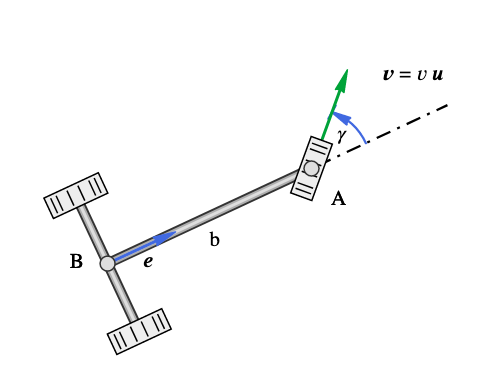

• Schleppkurvenanalyse für Fahrzeuge
• Planung von Parkplätzen
• Kreisverkehrentwurf
• Flughafenplanung
AutoTURN von Transoft Solutions
• Überprüfung der Befahrbarkeit von Straßen und weiterer Verkehrsprojekte.
Das Dreiradmodell

Abbildung 2: Dreiradmodell eines Fahrzeugs
Annahme einer langsamen Bewegung und einem schlupffreien Abrollen der Räder mit
• $\quad\boldsymbol u\quad$Einheitsvektor des Lenkeinschlags
• $\quad\boldsymbol e\quad$Einheitsvektor der Längsachse
• $\quad b\quad$ Schlepplänge
Während die Position des Führungspunktes eindeutig geführt wird, ist die Orientierung der Fahrzeugachse und die Lage des geschleppten Punktes B zu ermitteln.
Mathematisch gesehen liegt ein Verfolgerproblem vor. Grundsätzlich nichtholonom!
„Ein mechanisches System, das einer nichtholonomen kinematischen Bindung unterliegt, kann dennoch als ganzes
holonom sein. [...] Die Verfolgerbedingung ist zwar nichtholonom, sie wird aber durch eine weitere kinematische Bedingung ergänzt [...]. Die Verfolgerbedingung kann dann durch eine holonome Linearkombination
der beiden kinematischen Bindungen ersetzt werden. Das Gesamtproblem ist also holonom, obwohl in der ursprünglichen Formulierung eine der beiden kinematischen Bindungen nichtholonom war [1].“
— Manfred Braun
Vorgehen
Annahme: Lenkwinkel $\gamma$ bleibt konstant.
Das Fahrzeug dreht um seinen statischen Momentanpol P ${\boldsymbol r}_{PA} = \boldsymbol r_A - \boldsymbol r_P = - r\,\tilde{\boldsymbol u}$(1) *Tilde ( ~ ) ist als Orthogonaloperator aufzufassen.
Geometrische Zusammenhänge $r\,\sin\gamma = b\,,\quad\tan\gamma=\frac{b}{h}\,,\quad r^2 = b^2 + h^2$(2) mit $\sin\gamma = \boldsymbol{\tilde eu}$ und $\cos\gamma = \boldsymbol{eu}$
Die Untersuchung der Beschleunigungsform von Gleichung (1) bringt keinen Erkenntnisgewinn bezüglich der momentanen Winkelbeschleunigung $\dot\omega$ des Fahrzeugs.
Grund: Polbeschleunigung ist unbekannt
Neuer Ansatz durch Betrachtung eines Viergelenkmechanismus
• Fahrzeuglängsachse ist deckungsgleich mit der Koppel
• Schwinge verbindet die Hinterachse mit dem Momentanpol
• Wendepol $\boldsymbol r_{PW}$ liegt stets parallel zur Längsachse des Fahrzeugs
• Wenn A0 sich zwischen A und P befindet, dann liegt der Wendekreis hinter der Achse; andernfalls in Fahrrichtung
• Sonderfall 1: A0 deckungsgleich mit P —> Wendekreis entartet zu einem Punkt —> Fahrzeug befindet sich auf stationären Kreisfahrt
• Sonderfall 2: A0 deckungsgleich mit A —> Wendekreisradius strebt gegen unendlich
Bressesche Kreise
• Tangentialpol liegt stets auf der Hinterachse und zwar unabhängig von der Bahnkrümmung
• Lage des Tangentialpols hängt allein vom Lenkwinkel-einschlag ab
• Strebt der Bahnradius gegen unendlich, dann nähert sich der Beschleunigungspol dem Führungspunkt und der Wendepol dem Schnittpunkt zwischen Wendekreisradius und Bahnkrümmung
Anmerkung: Zeitunabhängig durch Einführung einer Schrittweite $\Delta s$
$\Delta s = \mu \cdot b$
Zusammenfassung
Es wurde ...
• ein numerisches Verfahren unter Berücksichtigung von Geschwindigkeits- und Beschleunigungsverhältnissen vorgestellt.
• eine Analogie von einem Fahrzeugmodell und einem Viergelenkmechanismus hergestellt.
• die aktuelle Winkelbeschleunigung mittels Bressescher Kreise bestimmt.
• ein robustes Verfahren zur Beschreibung der Fahrzeugbewegung mit guten Ergebnissen schon bei Schrittweiten von einem Viertel der Fahrzeuglänge präsentiert.
Vielen Dank für Ihre Aufmerksamkeit
Referenzen
[1] M. Braun, „Nichtholonome Bindungen und Systeme“, PAMM — Proceedings in
Applied Mathematics and Mechanics, 2003 [Online]. Verfügbar unter: 10.1002.[2] W. G. Cady, „The Circular Tractrix“, The American Mathematical Monthly, Vol. 72, No. 10,
pp. 1065 - 1071, 1965.[3] S. Gössner, Ein kinematisches Modell zur Analyse materialflußtechnischer Bewegungsabläufe.
Dortmund: Verlag Praxiswissen, 1992, isbn: 3-929443-01-5.[4] G. Figliolini, Ch. Lanni, „Kinematic Analysis of the Planar Motion of Vehicles
when Traveling Along Tractrix Curves“, ASME 2015 International Design Engineering
Technical Conferences and Computers and Information in Engineering
Conference.[5] S. Gössner, Mechanismentechnik — Vektorielle Analyse ebener Mechanismen. Berlin: Logos Verlag, 2017, isbn: 978-3-8325-4362-4.